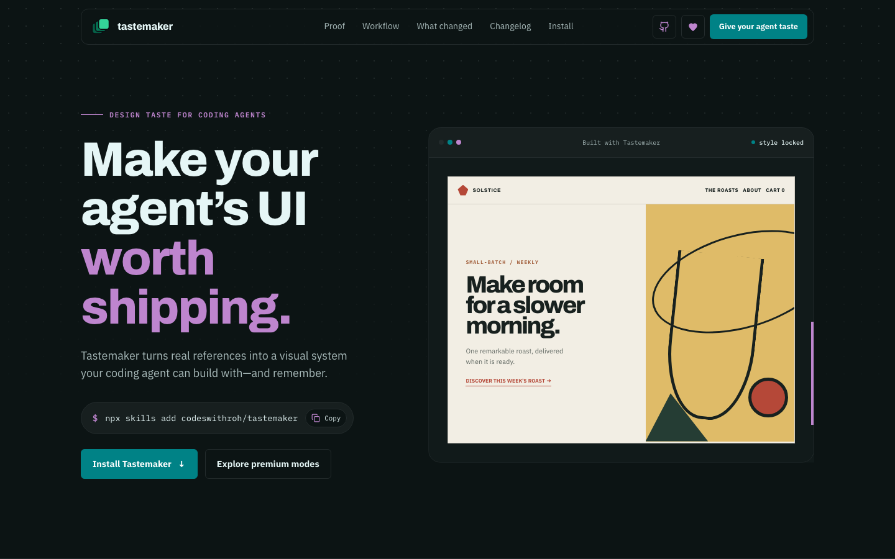

Fresh palettes
Generated per project, matched to mood, then checked against contrast floors.
Text / background16.74 PASSButton / label4.63 PASS
 tastemaker
tastemakerA free skill that gives AI coding agents real design taste before they write the screen.

tastemakerThe same landing-page prompt becomes a real visual direction instead of another rounded-card indigo template.
 tastemaker
tastemakerConcrete files and scripts keep the agent from drifting back to generic taste.
Generated per project, matched to mood, then checked against contrast floors.
The decisions live in the repo so future screens reuse the same rules.
Features become screenshots, comparisons, flows, and UI mockups.
 tastemaker
tastemakerNo account, subscription, hosted editor, or lock-in. Drop the skill into your agent and build the UI.
$ npx skills add codeswithroh/tastemaker